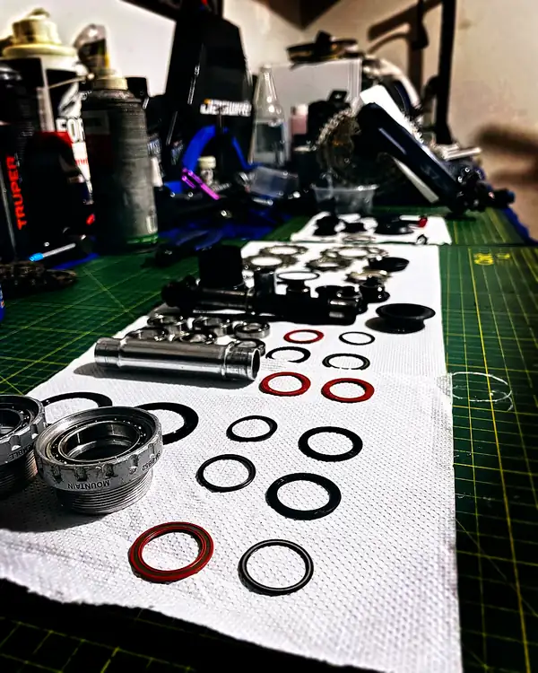

[ PROTOCOL Cr.08 — ROLLING CONTACT SERVICE ]MANUTENÇÃO PREMIUM HARDTAIL EM TRUJILLO — PROTOCOLO DE CONTATO ROLANTE
O rolamento não avisa. Degrada.
Um rolamento de bicicleta opera sob cargas combinadas: radial e axial simultâneas. O movimento central absorve o torque do ciclista. Os cubos transferem a tração ao solo. A direção suporta as forças de impacto no guidão.
Todo rolamento tem uma vida útil calculável. A fórmula de vida ISO:
L₁₀ = (C / P)³ × 10⁶ rev
Onde C é a carga dinâmica nominal do rolamento e P é a carga equivalente aplicada. Quando P aumenta por contaminação, graxa degradada ou folgas acumuladas, L₁₀ cai de forma cúbica.
A manutenção preventiva interrompe esse processo antes da falha.
O que é intervencionado no protocolo Cr.08
- Movimento central (BB): extração, limpeza e relubrificação de rolamentos de caixa de movimento central (BB92, PF30, BSA, T47 conforme especificação do quadro)
- Cubos dianteiro e traseiro: desmontagem de cassete e disco, extração de cones ou rolamentos vedados conforme sistema (Shimano, SRAM, Tune, Hope, Industry Nine)
- Direção: desmontagem da mesa e do garfo, extração das caçambas, limpeza de pistas, relubrificação ou substituição de rolamentos conforme desgaste
- Inspeção de todas as pistas (races) no quadro e no garfo quanto à presença de pitting ou brinelling
- Prensagem com adaptadores específicos — nunca a golpe, nunca com pressão excêntrica
- Torque final certificado em todos os pontos de fechamento
Graxa técnica de especificação industrial
O coeficiente de atrito rolante de um rolamento de esfera corretamente lubrificado é aproximadamente:
μ_R ≈ 0.001 – 0.003
Três ordens de magnitude menor que o atrito deslizante de um rolamento seco. A degradação da graxa elimina essa vantagem.
Trabalhamos com SKF LGHP 2/1: base polipropileno, espessante de poliureia, temperatura de operação -40°C a +150°C, altamente resistente à água. Para interfaces titânio–alumínio: pasta de cobre Liqui-Moly. Para direção integrada e semi-integrada: Motorex 2000.
A graxa não se improvisa. Cada zona tem sua especificação.
BikeLab Studio — Serviço de rolamentos em Trujillo
Calle Paraguay 300 – Urb. El Recreo – Trujillo
Segunda a sábado · 11:00 – 19:00
AGENDAR — MANUTENÇÃO PREMIUM HARDTAILInvestimento_
Inclui serviço completo de todos os rolamentos do quadro hardtail: movimento central, cubos e direção. Graxa técnica SKF LGHP 2/1. Rolamentos de substituição são orçados à parte conforme especificação.
Pagamento em sóis (PEN). Visa disponível com acréscimo de 5% por processamento bancário. Sem mínimos de cartão.
Perguntas Frequentes_
Quais rolamentos são intervencionados no serviço de rolamentos hardtail?
São intervencionados todos os rolamentos da bicicleta: movimento central (BB), cubos dianteiro e traseiro (2 rolamentos por cubo), direção (caçamba superior e inferior). No total, entre 6 e 8 rolamentos conforme o sistema de movimento central e o tipo de cubo.
Como saber quando os rolamentos precisam de serviço?
Sintomas claros: rangidos ou estalos sob carga na pedalada, movimento lateral no movimento central, folga na direção ou dificuldade de giro, ruído seco nos cubos ao rodar. Quando esses sintomas aparecem o dano já está em curso. O serviço preventivo a cada 12 a 18 meses evita dano nas pistas do quadro.
Substituem-se todos os rolamentos ou apenas os danificados?
Inspecionamos cada rolamento individualmente. Se o rolamento gira suave, sem ruído e sem folga, nós o limpamos e relubrificamos. Se há folga, pitting ou resistência irregular, é substituído. O preço inclui o serviço completo; os rolamentos de substituição são orçados à parte conforme a especificação exata.
Com qual graxa se trabalha?
Utilizamos graxa SKF LGHP 2/1: base mineral com espessante de poliureia, temperatura de operação -40°C a +150°C, resistência à água e cargas elevadas. Para interfaces de titânio e alumínio: pasta de cobre Liqui-Moly. Para direção: Motorex 2000.
Leitura recomendada
Sua Bicicleta Nova Não Está Pronta para Rodar95% das bicicletas novas em Trujillo precisam de ajuste profissional. Descubra por que a fábrica não termina o trabalho.
Ler artigo → | White Paper técnico →